Arbiansyah
Programmer · Calon Guru · Lifelong Learner
Refleksi Akhir PPL Terbimbing
Ujian ini bagian dari refleksi akhir PPL Terbimbing berupa E-Portfolio 1. E-Portfolio 1 bertujuan untuk memberikan refleksi awal sebagai fondasi dasar karakter mahasiswa dan memuat profil mahasiswa, analisis artefak produk pembelajaran, lampiran penilaian, serta model guru yang dituju.
Unsur penilaian E-Portfolio meliputi profil guru, kedalaman analisis produk, refleksi diri, serta navigasi dan tampilan. Portal ini disusun dalam satu website agar mudah diakses, setara dengan penggunaan platform seperti Google Sites, Wix, atau Canva.
Profil Mahasiswa
Gambaran diri, latar belakang, dan alasan kuat menjadi pendidik yang memadukan teknologi dan pembelajaran.
Data Diri
Saya Arbiansyah, berasal dari Kendari, Sulawesi Tenggara. Saat ini saya bekerja sebagai Web Developer di salah satu software house di kota kendari, sebuah pengalaman yang membuat saya terus belajar dan berkembang di dunia teknologi, khususnya dalam pengembangan sistem dan aplikasi berbasis web. Selain itu, saya merupakan alumni Program Studi Pendidikan Teknologi Informasi Universitas Muhammadiyah Kendari angkatan 2020 dan menyelesaikan studi pada tahun 2024.
Saat ini saya juga sedang menempuh Program Pendidikan Profesi Guru (PPG) di Universitas Islam Makassar. Keinginan saya menjadi guru lahir dari pengalaman saya berada langsung di dunia industri. Saya ingin membawa pengalaman nyata tersebut ke lingkungan sekolah agar peserta didik tidak hanya memahami teori, tetapi juga mengetahui bagaimana ilmu yang dipelajari diterapkan dalam dunia kerja dan perkembangan teknologi saat ini.
Saya percaya bahwa pendidikan harus mampu menjembatani kebutuhan industri dengan kemampuan peserta didik. Karena itu, tujuan saya adalah menjadi guru yang dapat membagikan pengalaman, keterampilan, dan wawasan praktis kepada siswa sehingga mereka lebih siap menghadapi tantangan di era digital. Saya ingin membantu siswa memahami bahwa teknologi bukan hanya tentang menggunakan perangkat, tetapi juga tentang berpikir kreatif, memecahkan masalah, dan terus beradaptasi dengan perkembangan zaman.
Bagi saya, profesi guru memiliki makna yang sangat dalam, karena saya percaya bahwa cara terbaik untuk belajar adalah dengan mengajar. Ketika seseorang mengajarkan ilmu kepada orang lain, maka ia juga sedang memperkuat pemahaman dan terus mengembangkan dirinya sendiri. Oleh sebab itu, menjadi guru bukan hanya tentang berbagi pengetahuan, tetapi juga tentang perjalanan belajar tanpa henti untuk terus tumbuh dan memberi manfaat bagi banyak orang.
Keputusan saya mengikuti Program Pendidikan Profesi Guru (PPG) bukan lahir dari tuntutan administrasi, melainkan dari sebuah kegelisahan yang tumbuh selama bertahun-tahun bekerja di industri teknologi. Saya menyaksikan betapa banyak lulusan SMK yang memasuki dunia kerja dengan pengetahuan teoritis yang cukup, namun lemah dalam keterampilan praktis dan adaptabilitas digital. Kesenjangan ini mendorong saya untuk bergerak — bukan hanya sebagai programmer, tetapi sebagai pendidik yang mampu menjembatani dunia industri dengan dunia sekolah.
PPG menjadi jalan saya untuk memperoleh kompetensi pedagogik yang terstruktur, sehingga pengalaman industri yang saya miliki dapat ditransformasikan menjadi pembelajaran yang bermakna bagi peserta didik. Saya ingin menjadi bukti hidup bahwa guru yang pernah bekerja di industri nyata dapat menghadirkan pembelajaran TIK yang relevan, kontekstual, dan menginspirasi.
Lokasi LPTK
LPTK saya berada di Universitas Islam Makassar (UIM) dan menjadi tempat saya menempuh Program Pendidikan Profesi Guru.
Lokasi LPTK ini menjadi pusat kegiatan perkuliahan, pendampingan, dan pengembangan kompetensi calon guru. Saya menempuh proses PPG di UIM Makassar dengan fokus pada pembelajaran yang adaptif, relevan, dan selaras dengan kebutuhan era digital.
Universitas Islam Makassar berlokasi di Kota Makassar, Sulawesi Selatan, dan mudah diakses melalui peta di samping. Berikut tampilan lokasi agar informasi kampus lebih jelas dan mudah dikenali.
-
LPTK
Universitas Islam Makassar -
Kota
Makassar, Sulawesi Selatan -
Program
PPG Calon Guru
Daerah Asal
Kendari merupakan ibu kota Provinsi Sulawesi Tenggara yang terkenal dengan keindahan alam pesisir, budaya tradisional, serta keramahan masyarakatnya. Kota ini berada di sekitar Teluk Kendari yang menjadi ikon utama daerah tersebut. Kehadiran Jembatan Teluk Kendari membuat pemandangan kota semakin modern dan indah, terutama pada malam hari ketika lampu jembatan menyala di atas laut. Kendari juga dikenal sebagai “Kota Lulo” karena tarian tradisional Lulo yang melambangkan persatuan, kebersamaan, dan persahabatan masyarakat suku Tolaki.
Selain budaya, Kendari memiliki banyak wisata alam menarik seperti Pantai Nambo yang terkenal dengan pasir putihnya, serta akses menuju Pulau Bokori dan Air Terjun Moramo yang menjadi destinasi favorit wisatawan. Suasana kota yang berada di tepi laut membuat udara terasa lebih sejuk dan nyaman dibandingkan banyak kota besar lainnya.
Keunikan lain dari Kendari adalah makanan khasnya. Salah satu yang paling terkenal adalah Sinonggi, makanan berbahan dasar sagu yang memiliki tekstur kenyal dan biasanya disantap bersama kuah ikan atau sayur. Selain itu ada juga Kabuto yang terbuat dari ubi kayu kering, serta Lapa-Lapa yang mirip lontong dan sering disajikan saat perayaan adat atau hari besar. Masyarakat Kendari juga terkenal dengan aneka olahan hasil laut segar seperti ikan bakar, cumi, dan udang karena letaknya yang dekat dengan laut.
Di bidang budaya, masyarakat Kendari terdiri dari berbagai suku seperti Tolaki, Bugis, Buton, dan Muna yang hidup berdampingan dengan harmonis. Keberagaman ini membuat Kendari kaya akan tradisi, bahasa daerah, seni tari, hingga festival budaya. Kombinasi antara alam, budaya, kuliner, dan perkembangan kota menjadikan Kendari sebagai salah satu kota unik dan menarik di kawasan timur Indonesia.
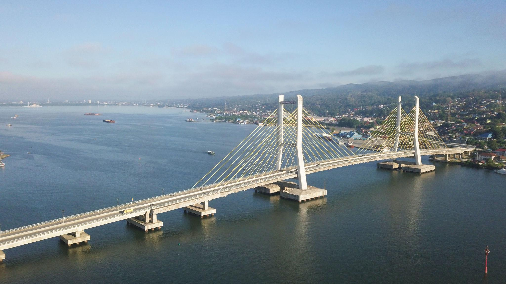
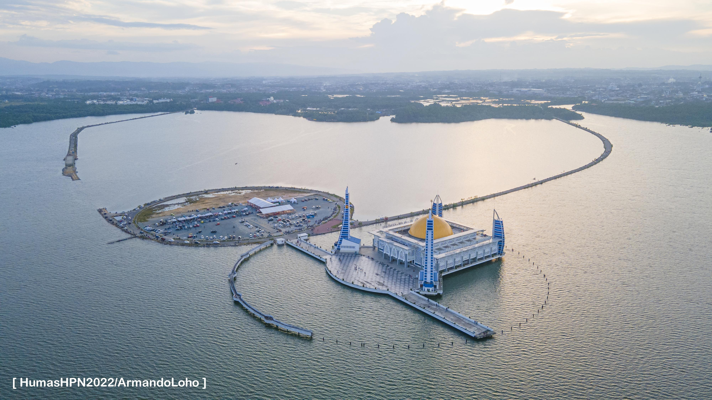
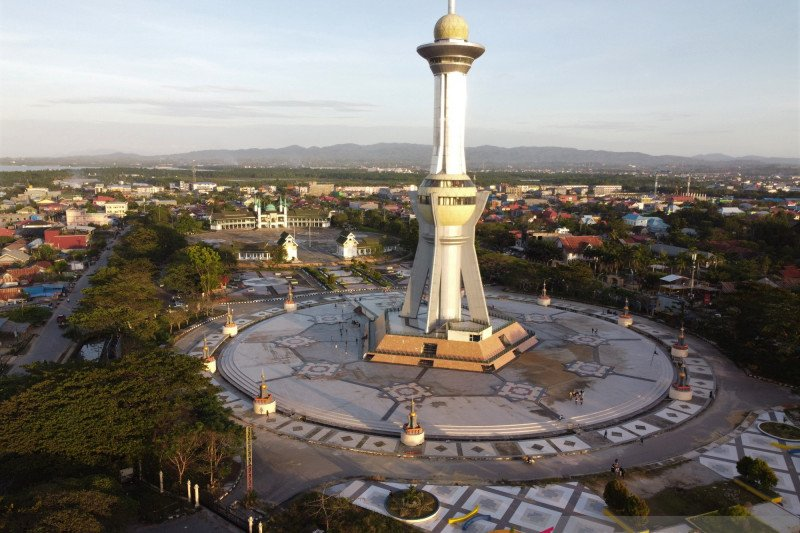
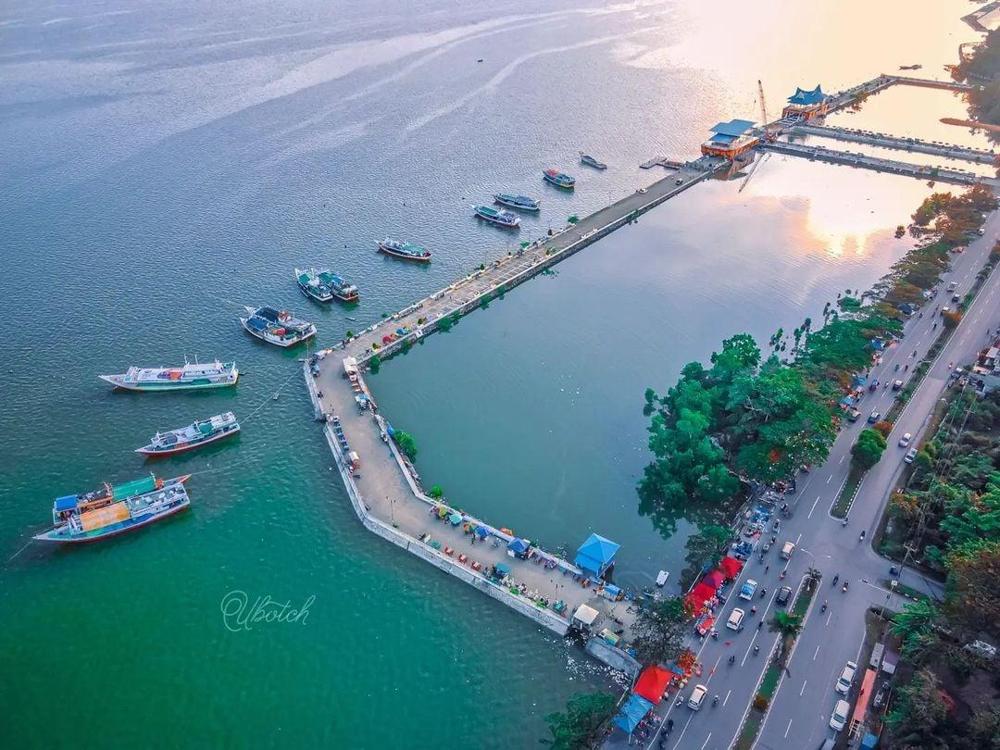
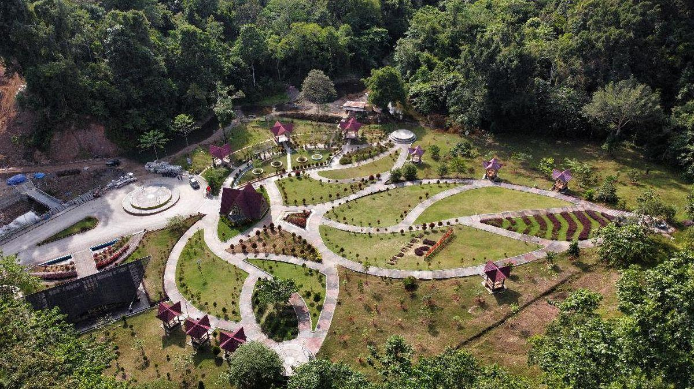
Inspirasi Jadi Guru
Namun di tengah baris-baris kode yang saya tulis setiap hari, ada satu pertanyaan yang terus mengusik: "Apa gunanya ilmu ini jika hanya tersimpan untuk diri sendiri?" Dari pertanyaan itulah panggilan untuk menjadi seorang guru lahir bukan guru biasa, melainkan guru yang mampu menjembatani dunia teknologi dengan generasi muda yang haus akan kompetensi digital.
"Cara terbaik untuk belajar adalah dengan mengajar"
Pendidikan Formal
Pengembangan & Pengalaman
Artefak Pembelajaran
Selama pelaksanaan PPL Terbimbing, saya merancang dan melaksanakan 5 Modul Ajar yang terbagi dalam tiga siklus praktik mengajar. Setiap modul dikembangkan secara sistematis dengan memadukan pendekatan pedagogi modern, teknologi digital, dan kebutuhan nyata siswa di lapangan.
Setiap siklus dilengkapi dengan analisis mendalam terhadap artefak pembelajaran mencakup konteks pelaksanaan, tujuan, kendala, landasan teori pedagogi, kelebihan dan kekurangan artefak, faktor keberhasilan, serta adaptasi untuk berbagai kondisi kelas. Pilih siklus di bawah untuk menjelajahi modul, media ajar, LKPD, dan penilaian Guru Pamong dari masing-masing siklus.
Alur Tujuan Pembelajaran (ATP) disusun sebagai panduan urutan kompetensi yang harus dikuasai peserta didik secara bertahap dan berkesinambungan selama satu tahun pelajaran. ATP ini menjadi acuan utama dalam penyusunan seluruh Modul Ajar di tiga siklus PPL Terbimbing.
Siklus 1
Pertemuan 1 – 4 · 1 Modul Ajar
- Banyak kendala teknis tak terduga saat instalasi Laragon dan WordPress: error konfigurasi port, perbedaan spesifikasi perangkat keras, dan ketidaksesuaian versi sistem operasi menyebabkan troubleshooting satu per satu menyita sebagian besar waktu pembelajaran.
- Target utama pembelajaran membuat Post dan Page di WordPress tidak tercapai karena waktu habis untuk menangani masalah teknis.
- Suasana kerja kelompok kurang kondusif: beberapa kelompok mulai ribut, saling memanggil antarkelompok, dan kehilangan fokus saat guru berkonsentrasi pada troubleshooting perangkat.
- Produk belajar bersifat nyata dan dapat langsung diakses secara online.
- Materi sangat relevan dengan kebutuhan industri digital saat ini.
- Mendorong kolaborasi dan pembagian peran antar anggota kelompok.
- Siswa terlihat antusias karena hasil kerja mereka berwujud dan dapat ditampilkan.
- Instruksi LKPD pada langkah instalasi plugin masih perlu diperjelas dengan tangkapan layar panduan.
- Alokasi waktu untuk sesi orientasi WordPress kurang sehingga beberapa kelompok tertinggal.
- Rubrik asesmen belum memuat indikator estetika dan keterbacaan konten secara spesifik.
- Kelas kemampuan rendah: Materi dibuat lebih bertahap dengan panduan langkah-per-langkah bergambar dan praktik offline menggunakan XAMPP/localhost sebelum hosting.
- Fasilitas terbatas: Praktik dilakukan secara berkelompok dengan berbagi satu perangkat, atau menggunakan demo berbasis video interaktif.
- Kelas lebih maju: Proyek diperluas dengan penambahan fitur e-commerce menggunakan WooCommerce dan optimasi SEO dasar.
A1 Bagaimana kegiatan apersepsi membantu murid memahami tujuan pembelajaran yang akan dicapai?
Pada Siklus 1 (Modul Pemrograman Website / WordPress), kegiatan apersepsi yang saya lakukan belum berjalan secara optimal. Saya membuka pembelajaran dengan pertanyaan pemantik tentang apa yang siswa ketahui mengenai website dan CMS, namun respons yang muncul masih sangat terbatas. Banyak siswa terlihat bingung dan belum mampu mengaitkan konsep CMS yang bersifat teori dengan praktik nyata membuat sebuah website yang utuh.
Penjelasan awal yang saya sampaikan masih terlalu teoritis dan berpusat pada definisi, sehingga siswa belum mendapatkan gambaran konkret mengenai apa yang akan mereka capai. Tujuan pembelajaran membuat website fungsional berbasis WordPress belum berhasil dikomunikasikan secara jelas dan menarik, sehingga motivasi awal siswa kurang terbangkitkan.
A2 Kegiatan apa saja yang berhasil dan belum berhasil dilaksanakan dalam kegiatan inti?
Kegiatan yang berhasil dilaksanakan adalah proses instalasi Laragon di beberapa perangkat siswa serta pemahaman tentang konsep dasar localhost dan cara kerja server lokal. Siswa yang berhasil mengikuti langkah ini tampak antusias dan ingin segera mencoba tahap berikutnya.
Namun, instalasi WordPress di setiap laptop belum berhasil dilaksanakan secara merata. Muncul banyak kendala teknis tak terduga seperti error pengaturan port, perbedaan spesifikasi perangkat, dan ketidaksesuaian versi sistem operasi. Waktu banyak terbuang untuk troubleshooting satu per satu, sehingga target membuat Post dan Page di WordPress tidak tercapai. Saat kerja kelompok, sejumlah kelompok mulai ribut dan tidak fokus, sehingga saya harus membagi perhatian antara troubleshooting teknis dan pengelolaan ketertiban kelas.
A3 Seberapa efektif penggunaan media pembelajaran untuk melibatkan partisipasi aktif di kelas?
Media yang saya gunakan, yakni modul PDF dan tampilan layar proyektor, kurang efektif mendorong partisipasi aktif. Tempo demonstrasi yang terlalu cepat membuat banyak siswa tertinggal dan kehilangan langkah penting. Tidak adanya video tutorial membuat siswa yang tertinggal tidak dapat mengulang sendiri tahap yang terlewat.
Modul PDF yang statis dan padat teks juga kurang menarik bagi siswa SMK yang lebih responsif terhadap media visual interaktif. Akibatnya, saat kerja kelompok dimulai, banyak siswa tidak tahu harus melakukan apa, yang memicu kebingungan kolektif di dalam kelompok.
A4 Bagaimana reaksi/respon murid dalam setiap kegiatan dari pembukaan hingga penutupan pembelajaran?
Pada pembukaan, siswa cukup antusias dan penasaran dengan materi WordPress yang dianggap baru. Namun keantusiasan memudar di pertengahan kegiatan inti ketika kendala teknis bermunculan. Banyak siswa frustrasi saat laptop mereka tidak berhasil menjalankan konfigurasi seperti demonstrasi.
Suasana kerja kelompok menjadi kurang kondusif; beberapa siswa menyerah dan hanya menunggu temannya. Pada penutupan, saya belum sempat melakukan refleksi dan umpan balik yang memadai karena waktu habis untuk menangani masalah teknis. Secara keseluruhan, persiapan teknis dan strategi pengelolaan kelas perlu diperbaiki secara signifikan.
B1 Apa umpan balik dari Guru Pamong untuk praktik pembelajaran terbimbing yang lebih baik?
Guru Pamong menyampaikan bahwa saya perlu meningkatkan kemampuan membaca situasi kelas dan merespons cepat ketika kondisi mulai tidak kondusif. Beliau menegaskan bahwa keributan saat kerja kelompok mencerminkan kurangnya struktur dan aturan yang jelas.
Beliau menyarankan agar saya merancang tata tertib kerja kelompok yang eksplisit (larangan berpindah meja, batasan suara, pembagian peran), menyiapkan panduan visual langkah-demi-langkah yang lebih terstruktur, serta menerapkan metode tutor sebaya agar beban troubleshooting tidak hanya bertumpu pada guru.
B2 Unsur apa yang akan Anda ubah agar metode pembelajaran menjadi lebih baik?
Pertama, merancang peraturan kerja kelompok yang jelas dan disosialisasikan di awal sesi (batas suara, larangan berpindah tempat, pembagian peran: ketua, notulen, teknisi). Kedua, mengganti modul PDF statis dengan panduan visual bergambar atau video tutorial pendek yang dapat diakses mandiri melalui QR code.
Ketiga, menerapkan sistem tutor sebaya terstruktur dengan menunjuk asisten kelompok dari siswa berprestasi. Keempat, menyiapkan skenario troubleshooting umum secara tertulis agar tidak menghabiskan waktu. Kelima, menyesuaikan tempo demonstrasi dengan kemampuan rata-rata kelas, bukan siswa yang paling cepat.
Siklus 2
Pertemuan 5 – 8 · 2 Modul Ajar
- Antusiasme siswa yang berlebihan justru mengganggu manajemen waktu: beberapa kelompok terlibat perdebatan desain yang panjang, anggota berpindah meja untuk melihat hasil kelompok lain, dan tingkat kebisingan kelas meningkat tajam.
- Manajemen waktu kerja kelompok yang kurang ketat menyebabkan sejumlah kelompok terlambat menyelesaikan dan mengumpulkan LKPD tepat waktu.
- Sesi refleksi bersama dan pemberian umpan balik pada penutupan tidak dapat dilakukan secara optimal karena waktu terserap habis oleh kerja kelompok.
- Materi sangat dekat dengan kehidupan sehari-hari siswa sehingga relevansi terasa langsung.
- Tugas infografis mendorong kreativitas dan kemampuan visual komunikasi siswa.
- Diskusi kelas berlangsung lebih hidup karena topik media digital bersifat kontekstual dan personal.
- LKPD laporan penelusuran perlu dilengkapi panduan evaluasi sumber (kriteria kredibilitas sumber) yang lebih eksplisit.
- Asesmen infografis belum mencakup indikator kedalaman analisis, hanya aspek estetika dan kelengkapan konten.
- Kelas kemampuan rendah: Sederhanakan tugas laporan menjadi format tabel isian dengan panduan pertanyaan terpandu.
- Fasilitas terbatas: Tugas infografis dapat diganti dengan poster manual bertema media digital.
- Kelas lebih maju: Siswa diminta memproduksi mini-podcast atau video edukasi tentang etika digital sebagai produk akhir.
A1 Bagaimana kegiatan apersepsi membantu murid memahami tujuan pembelajaran yang akan dicapai?
Pada Siklus 2 (Modul Search Engine & Media Digital), apersepsi meningkat signifikan dibanding siklus pertama. Saya membuka pembelajaran dengan menampilkan contoh nyata berita hoaks yang viral, lalu mengaitkannya dengan pentingnya literasi digital dan kemampuan mencari informasi akurat menggunakan search engine.
Pendekatan ini jauh lebih efektif membangkitkan rasa ingin tahu. Hampir seluruh siswa langsung terlibat aktif dalam diskusi pembuka karena topiknya relevan dengan kehidupan sehari-hari. Tujuan pembelajaran berhasil dikomunikasikan secara konkret dan bermakna, sehingga motivasi siswa lebih kuat.
A2 Kegiatan apa saja yang berhasil dan belum berhasil dilaksanakan dalam kegiatan inti?
Sesi diskusi kelompok untuk mencari literatur digital menggunakan Google Operators dan evaluasi keabsahan informasi melalui situs cek fakta berjalan baik siswa sangat aktif. Penggunaan Canva untuk membuat konten digital juga disambut antusias.
Namun muncul hambatan baru: saat kerja kelompok, kelas kembali ribut, tetapi dengan karakter berbeda. Jika siklus 1 dipicu kebingungan, siklus 2 dipicu antusiasme berlebih. Beberapa kelompok berdebat desain terlalu lama, saling memanggil, bahkan berpindah meja untuk melihat hasil kelompok lain. Manajemen waktu terganggu dan sejumlah kelompok terlambat mengumpulkan LKPD.
A3 Seberapa efektif penggunaan media pembelajaran untuk melibatkan partisipasi aktif di kelas?
Penggunaan media meningkat signifikan. Canva sebagai media kreatif dan situs cek fakta sebagai media evaluasi informasi terbukti efektif meningkatkan keterlibatan. Hampir seluruh kelas terlibat langsung dalam mencari, mengevaluasi, dan mendesain konten digital jauh lebih hands-on dibanding siklus 1.
Meski demikian, efektivitas media yang tinggi membawa tantangan: siswa terlalu asyik dengan platform sehingga kehilangan kesadaran batas waktu. Dibutuhkan strategi manajemen waktu yang lebih tegas agar antusiasme dapat diarahkan secara produktif tanpa mengorbankan ketuntasan tugas.
A4 Bagaimana reaksi/respon murid dalam setiap kegiatan dari pembukaan hingga penutupan pembelajaran?
Respons siswa pada siklus 2 jauh lebih positif. Dari pembukaan hingga akhir, mayoritas siswa terlibat aktif dan tidak ada yang menyerah. Semangat kolaborasi meningkat.
Tantangannya adalah mengelola energi positif yang berlebihan. Saat kerja kelompok, beberapa kelompok sangat ribut, anggota bergerak bebas antar meja, dan kebisingan kelas meningkat tajam sehingga mengganggu kelompok lain. Karena waktu habis akibat manajemen yang kurang ketat, sesi refleksi dan umpan balik pada penutupan belum optimal.
B1 Apa umpan balik dari Guru Pamong untuk praktik pembelajaran terbimbing yang lebih baik?
Guru Pamong mengapresiasi peningkatan nyata dari siklus 1 ke siklus 2 keterlibatan dan antusiasme kelas meningkat, metode lebih variatif dan relevan. Namun beliau menegaskan bahwa mengendalikan ketertiban kelas saat diskusi bebas dan kerja kelompok adalah kompetensi yang tidak boleh diabaikan.
Beliau menyarankan menerapkan sistem time-keeper di tiap kelompok, memberikan sinyal visual atau bunyi sebagai penanda waktu, serta menetapkan aturan posisi duduk yang ketat agar siswa tidak berkeliaran. Manajemen waktu tiap fase juga perlu dipertegas dengan batas waktu yang tertulis di papan tulis.
B2 Unsur apa yang akan Anda ubah agar metode pembelajaran menjadi lebih baik?
Pertama, menetapkan peran time-keeper di setiap kelompok sebagai tanggung jawab resmi yang dinilai. Kedua, menuliskan batas waktu setiap fase di papan tulis atau layar proyektor agar dapat dipantau visual oleh seluruh kelas. Ketiga, membuat kontrak kelompok sederhana di awal sesi berisi kesepakatan batas suara dan larangan berpindah tempat.
Keempat, menyiapkan tanda/sinyal (ketukan meja atau lampu proyektor dipadamkan sesaat) sebagai penanda waktu kerja kelompok hampir habis. Kelima, memastikan waktu refleksi dan penutupan tidak terkorbankan dengan memasukkannya sebagai bagian terstruktur dalam alur pembelajaran.
Siklus 3
Pertemuan 9 – 12 · 2 Modul Ajar
- Kecenderungan sejumlah siswa untuk melakukan copy-paste secara langsung saat mengerjakan dokumen atau presentasi tanpa memahami konteks materi dan etika sitasi.
- Beberapa siswa masih kesulitan memahami logika rumus lanjutan Microsoft Excel, seperti VLOOKUP bersarang atau IF bertingkat, menunjukkan kebutuhan akan modul referensi yang lebih terstruktur.
- Pemahaman siswa tentang etika akademik dan penerapan HAKI masih perlu diperkuat secara berkelanjutan; beberapa kelompok harus ditegur berulang kali.
- Materi mendorong berpikir kritis dan kesadaran etika digital yang relevan dengan kehidupan siswa.
- Studi kasus nyata membuat konsep HKI yang abstrak menjadi konkret dan mudah dipahami.
- Diskusi kelas berlangsung matang karena siswa sudah percaya diri menyampaikan argumen.
- Modul terakhir ini menjadi penutup yang menautkan seluruh kompetensi dari siklus sebelumnya.
- LKPD studi kasus perlu dilengkapi rubrik penilaian argumentasi agar penilaian lebih objektif.
- Alokasi waktu untuk presentasi hasil praktik dokumen terlalu padat sehingga tidak semua kelompok tampil maksimal.
- Kelas kemampuan rendah: Studi kasus disederhanakan menjadi pilihan benar/salah disertai alasan singkat dengan panduan terstruktur.
- Fasilitas terbatas: Praktik Office dapat dilakukan secara bergantian atau berbasis lembar kerja cetak tanpa bergantung penuh pada perangkat.
- Kelas lebih maju: Siswa diminta menyusun mini-debat atau makalah ringkas tentang dilema etika hak cipta digital terkini (mis. AI dan hak cipta).
A1 Bagaimana kegiatan apersepsi membantu murid memahami tujuan pembelajaran yang akan dicapai?
Pada Siklus 3 (Modul Microsoft Office & HAKI), apersepsi berjalan sangat efektif dan lancar. Saya membuka pembelajaran dengan menampilkan kasus nyata pelanggaran hak cipta digital yang viral, lalu menghubungkannya dengan keterampilan Microsoft Office sebagai bekal dunia kerja.
Pendekatan berbasis kasus nyata ini langsung menarik perhatian seluruh siswa. Mereka spontan memberi komentar yang menunjukkan pemahaman mengapa materi ini penting. Tujuan pembelajaran terkomunikasikan dengan sangat jelas, dan pengalaman dua siklus sebelumnya membantu saya merancang apersepsi yang lebih tajam dan terhubung ke konteks nyata.
A2 Kegiatan apa saja yang berhasil dan belum berhasil dilaksanakan dalam kegiatan inti?
Kegiatan inti berjalan sangat baik. Praktik Microsoft Office (Word, Excel, PowerPoint) dan analisis lisensi Creative Commons terlaksana sesuai alokasi waktu. Sistem tutor sebaya dari siklus sebelumnya terbukti efektif mengurangi beban troubleshooting, dan manajemen waktu jauh lebih tertib berkat time-keeper dan kontrak kelompok. Keributan berkurang drastis; siswa lebih fokus.
Masalah yang masih muncul adalah kecenderungan sebagian siswa melakukan copy-paste langsung tanpa memahami konteks dan etika sitasi. Beberapa kelompok masih perlu ditegur soal orisinalitas karya dan penerapan HAKI, menandakan pemahaman etika akademik perlu diperkuat secara berkelanjutan.
A3 Seberapa efektif penggunaan media pembelajaran untuk melibatkan partisipasi aktif di kelas?
Efektivitas media mencapai titik tertinggi. Kombinasi demonstrasi langsung Microsoft 365 di proyektor, panduan visual bergambar hasil perbaikan dari siklus 1, dan studi kasus nyata HAKI menciptakan pengalaman belajar yang komprehensif. Sekitar 95% siswa mampu mempraktikkan materi secara mandiri tanpa menunggu bantuan guru, dan sistem tutor sebaya memaksimalkan keterlibatan.
Satu-satunya area yang masih perlu penguatan adalah media/modul khusus untuk fungsi lanjutan Microsoft Excel, karena beberapa siswa masih kesulitan memahami logika rumus yang kompleks.
A4 Bagaimana reaksi/respon murid dalam setiap kegiatan dari pembukaan hingga penutupan pembelajaran?
Respons siswa pada siklus 3 adalah yang paling positif dan kondusif sepanjang PPL Terbimbing. Siswa bekerja teratur, disiplin menjaga waktu, dan suasana kelas sangat kondusif. Tidak ada lagi keributan berarti; setiap kelompok fokus pada tugasnya. Sesi penutupan terlaksana sempurna refleksi bersama, umpan balik singkat, dan penarikan kesimpulan oleh siswa.
Hambatan yang tersisa bersifat minor, yakni kebingungan sebagian siswa menganalisis logika fungsi lanjutan Excel seperti VLOOKUP bersarang atau IF bertingkat. Ini menunjukkan diferensiasi konten untuk kecepatan belajar yang berbeda masih perlu diperhatikan ke depan.
B1 Apa umpan balik dari Guru Pamong untuk praktik pembelajaran terbimbing yang lebih baik?
Guru Pamong memberikan penilaian sangat positif atas perkembangan yang konsisten dan terstruktur dari pengelolaan teknis di siklus 1, dinamika kelompok di siklus 2, hingga kelas yang kondusif di siklus 3. Beliau khusus mengapresiasi penerapan tutor sebaya dan manajemen waktu yang sudah berjalan baik.
Catatan penting untuk terus dikembangkan: literasi instruksional siswa perlu dilatih lebih sistematis. Banyak siswa langsung bertanya tanpa membaca instruksi modul terlebih dahulu. Beliau menyarankan agar siswa dibiasakan membaca instruksi secara mandiri dan tuntas sebelum praktik, sebagai fondasi kemandirian belajar.
B2 Unsur apa yang akan Anda ubah agar metode pembelajaran menjadi lebih baik?
Pertama, membangun kebiasaan literasi instruksional di awal setiap sesi dengan meminta perwakilan siswa membacakan instruksi tugas dengan lantang, agar pemahaman awal seragam dan pertanyaan prosedural berkurang. Kedua, mengembangkan lembar referensi khusus rumus lanjutan Excel dengan bahasa sederhana dan contoh visual.
Ketiga, menyiapkan kuis singkat berbasis HAKI di akhir sesi sebagai reinforcement agar konsep etika sitasi dan orisinalitas tertanam. Keempat, mempertahankan dan memperkuat sistem tutor sebaya yang terbukti efektif sebagai strategi diferensiasi berkelanjutan.
Galeri / Dokumentasi
Dokumentasi proses mengajar, pendampingan siswa, dan praktik lab.
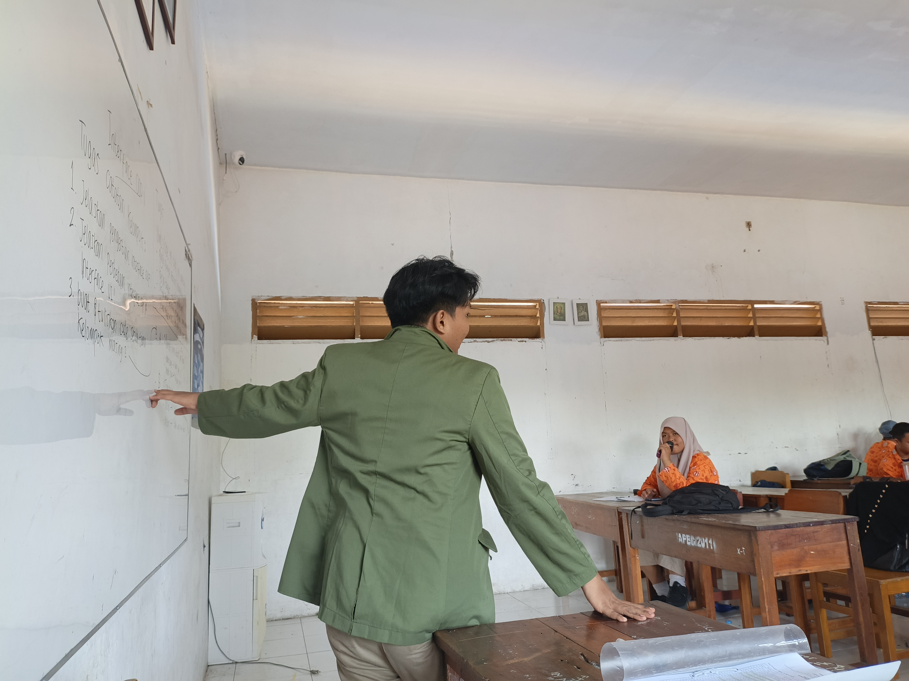
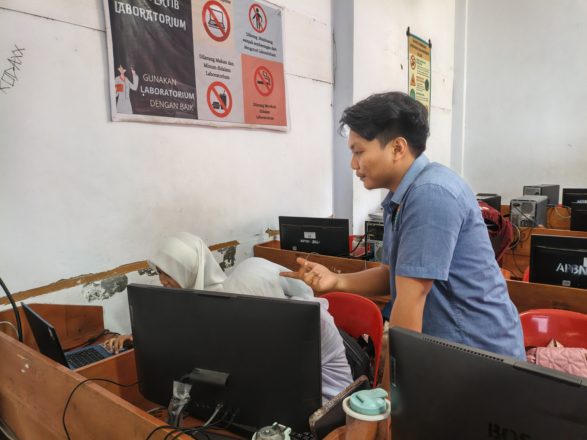
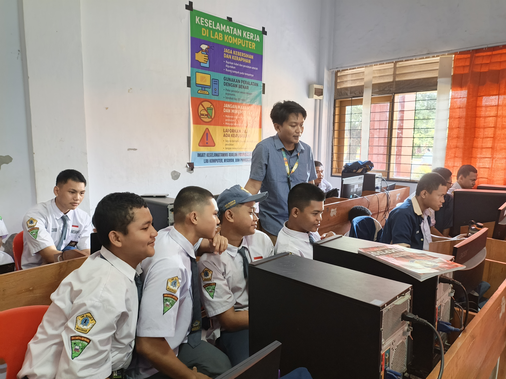
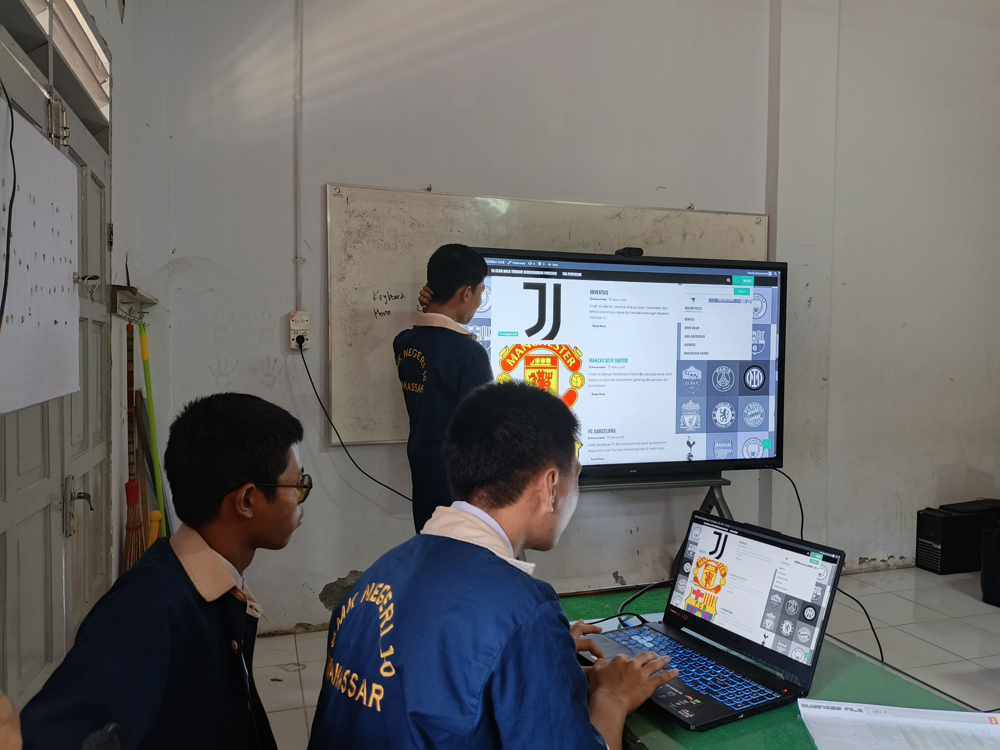
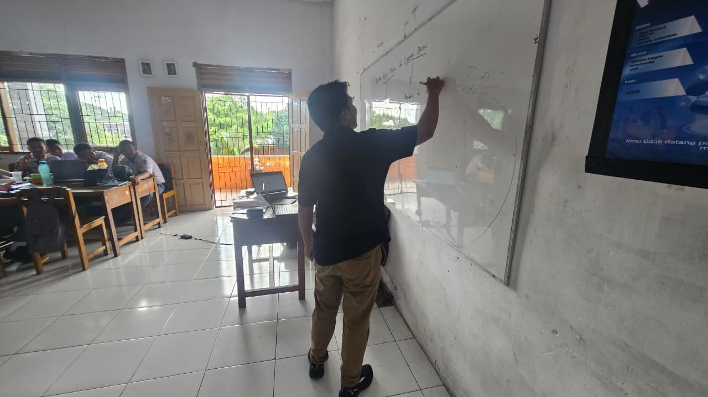
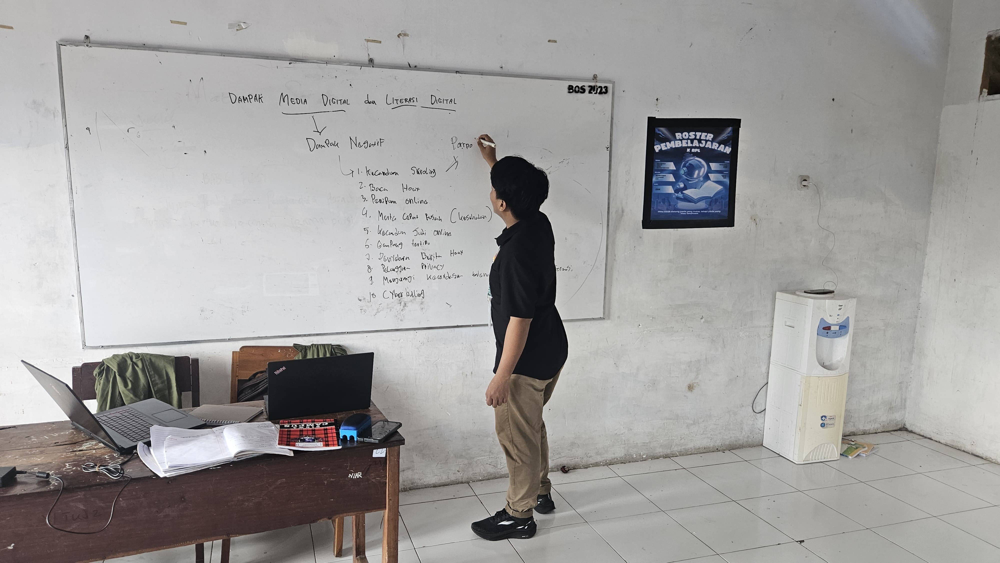
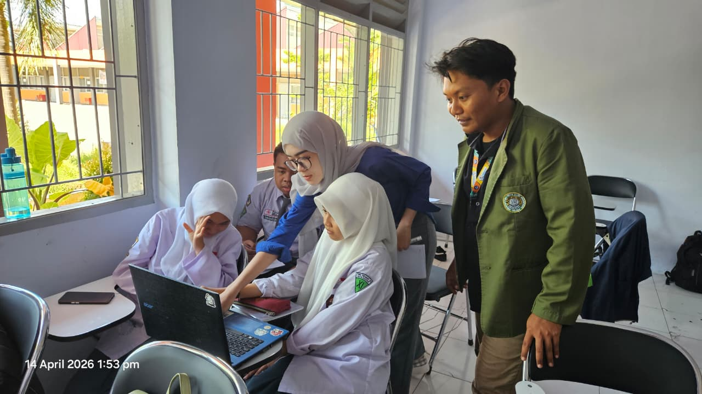
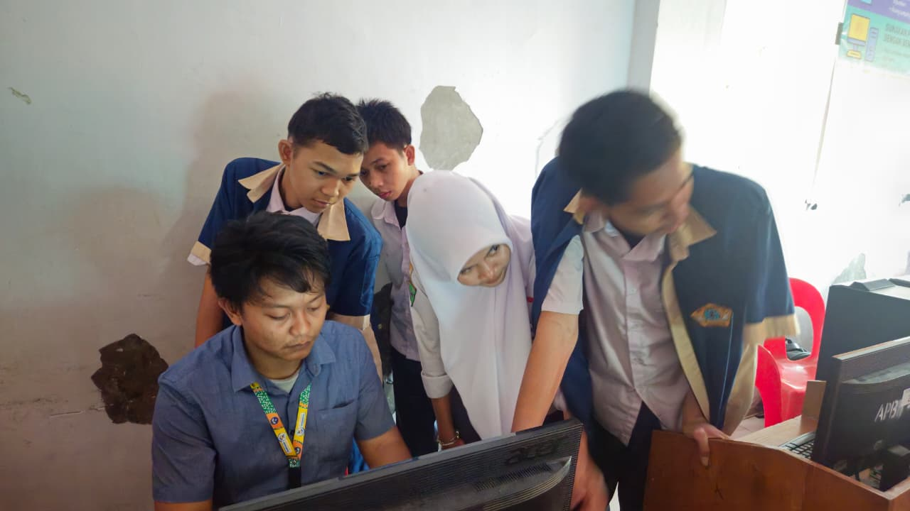
Penilaian Dosen Pembimbing Lapangan (DPL)
Penilaian dan umpan balik dari Dosen Pembimbing Lapangan (DPL) terhadap keseluruhan kinerja dan perkembangan kompetensi mahasiswa selama PPL Terbimbing.
Umpan Balik DPL
DPL mengapresiasi konsistensi perkembangan mahasiswa dari siklus pertama hingga siklus ketiga yang tercermin jelas dalam dokumentasi refleksi dan artefak pembelajaran. Kemampuan merancang modul ajar berbasis TPACK dan mengintegrasikan teknologi secara kontekstual dinilai sebagai kekuatan utama yang perlu terus dikembangkan.
DPL menyarankan agar mahasiswa memperdalam pemahaman tentang asesmen autentik dan diferensiasi instruksional sebagai bekal menghadapi PPL Mandiri, serta meningkatkan kemampuan menulis jurnal refleksi yang lebih sistematis berbasis model GIBBS agar proses belajar dari pengalaman menjadi lebih terstruktur dan terukur.
Sertifikat & Penghargaan
Sertifikat dan penghargaan yang mendukung kompetensi sebagai calon guru profesional di bidang teknologi informasi.
Lampiran Penilaian GP
Hasil penilaian Guru Pamong atas rancangan pembelajaran (Lampiran 7) dan praktik mengajar (Lampiran 8) selama tiga siklus PPL Terbimbing.
| No | Aspek | Indikator | Deskriptor | S1 | S2 | S3 |
|---|---|---|---|---|---|---|
| 1 | Identitas dan Kompetensi | Kelengkapan | Memuat mata pelajaran, jenjang pendidikan, kelas, semester, alokasi waktu, dan tanggal pelaksanaan. | 4 | 3 | 4 |
| Kompetensi | Memuat SK, KD, CP, dan indikator pembelajaran sesuai dengan standar isi/tujuan. | 2 | 4 | 4 | ||
| Memuat level kemampuan murid berdasarkan hasil observasi peserta didik. | 3 | 3 | 4 | |||
| Tujuan | Memuat tujuan dengan menggunakan kata kerja Bloom Taxonomy. | 4 | 4 | 3 | ||
| 2 | Pengembangan materi, bahan, sumber, dan media belajar | Pengembang materi | Cakupan materi sesuai dengan KD/CP dan hasil observasi peserta didik. | 3 | 2 | 4 |
| Materi pembelajaran berdasarkan kajian teori dan menggunakan teknik scaffolding. | 3 | 4 | 4 | |||
| Pengembang bahan belajar | Isi bahan ajar memuat materi yang dipelajari dan instruksi yang diperlukan. | 3 | 4 | 3 | ||
| Sumber belajar | Sumber belajar sesuai dengan KD dan tujuan pembelajaran. | 3 | 3 | 4 | ||
| Sumber belajar dipilih berdasarkan level kemampuan/pemahaman peserta didik. | 4 | 4 | 4 | |||
| Media belajar | Media pembelajaran disajikan berdasarkan kondisi lingkungan belajar dan kebutuhan murid. | 3 | 2 | 3 | ||
| Media pembelajaran bervariasi mengikuti transisi kegiatan yang direncanakan. | 3 | 3 | 4 | |||
| 3 | Skenario kegiatan pembelajaran | Kegiatan pembuka | Memuat kegiatan apersepsi untuk menghubungkan persepsi awal peserta didik dan tujuan pembelajaran. | 4 | 4 | 4 |
| Kegiatan inti | Menuliskan tahapan kegiatan inti secara jelas dengan menerapkan teknik scaffolding. | 3 | 2 | 3 | ||
| Menuliskan alokasi waktu untuk setiap tahapan. | 2 | 4 | 4 | |||
| Tahapan menunjukkan interaksi murid dengan bahan ajar, sesama murid, guru dan lingkungan. | 4 | 2 | 3 | |||
| Kegiatan penutup | Memuat simpulan akhir yang akan direfleksikan oleh siswa dan guru. | 3 | 3 | 4 | ||
| Memuat rencana tindak lanjut pembelajaran (tugas pemantapan atau reviu). | 3 | 4 | 4 | |||
| 4 | Penilaian | Kesesuaian dengan kompetensi | Alat penilaian sesuai dengan KD/CP, tujuan pembelajaran, dan kemampuan peserta didik. | 4 | 4 | 4 |
| Instruksi asesmen jelas dan merinci langkah yang diperlukan dan/atau disertai contoh. | 4 | 4 | 3 | |||
| Memuat kunci/kisi-kisi jawaban dan rubrik penilaian. | 4 | 4 | 4 |
| No | Aspek | Indikator | Deskriptor | S1 | S2 | S3 |
|---|---|---|---|---|---|---|
| 1 | Membuka Pelajaran | Apersepsi | Keterkaitan tujuan pembelajaran dengan pengetahuan yang sudah dipelajari murid atau kehidupan sehari-hari. | 3 | 4 | 3 |
| 2 | Melaksanakan kegiatan inti pelajaran | Metode pembelajaran | Metode pembelajaran mendorong murid untuk aktif di kelas. | 3 | 3 | 4 |
| Metode pembelajaran mendorong murid untuk berkolaboratif dalam diskusi atau latihan di kelas. | 4 | 2 | 4 | |||
| Ketepatan materi/konsep | Materi yang disajikan sesuai dengan KD/CP dan tujuan pembelajaran. | 2 | 4 | 4 | ||
| Materi yang dijelaskan sesuai dengan level kemampuan dan latar belakang murid berdasarkan hasil observasi. | 3 | 4 | 3 | |||
| Penguasaan kompetensi melaksanakan pembelajaran | Mendemonstrasikan kompetensi yang harus dicapai murid. | 3 | 3 | 3 | ||
| Melakukan transisi kegiatan yang berkesinambungan untuk penguatan kompetensi murid. | 4 | 4 | 4 | |||
| Memberi umpan balik terhadap performa murid di kelas. | 3 | 2 | 4 | |||
| Memberikan respon terhadap pertanyaan maupun pendapat murid di kelas. | 4 | 3 | 4 | |||
| Media pembelajaran | Media pembelajaran digunakan sesuai dengan KD/CP, tujuan pembelajaran, dan kebutuhan murid. | 3 | 4 | 4 | ||
| Menggunakan media pembelajaran dengan efektif dan efisien sesuai target pembelajaran dan kondisi kelas. | 4 | 4 | 4 | |||
| Memanfaatkan media pembelajaran dengan melibatkan partisipasi aktif murid. | 3 | 3 | 4 | |||
| 3 | Menutup pembelajaran | Refleksi dan penilaian | Mengakomodasi kesulitan murid yang terjadi di dalam kelas. | 4 | 4 | 3 |
| Membantu membuat kesimpulan akhir dari materi yang telah dipelajari. | 4 | 4 | 4 | |||
| Melakukan penilaian terhadap performa murid sesuai dengan KD/CP dan tujuan pembelajaran. | 3 | 2 | 4 | |||
| 4 | Faktor penunjang | Penggunaan bahasa, pengaturan waktu, percaya diri, dan penampilan diri | Menggunakan bahasa yang jelas agar mudah dipahami oleh murid. | 3 | 3 | 4 |
| Mengorganisasikan waktu dengan baik dari awal hingga akhir kegiatan pembelajaran. | 4 | 4 | 3 | |||
| Menunjukkan kepercayaan diri yang baik. | 4 | 4 | 3 | |||
| Memperlakukan murid dengan baik dan profesional. | 4 | 3 | 4 | |||
| Berbusana formal dan berdandan rapi. | 3 | 4 | 4 |
Ingin Menjadi Guru Seperti Apa ?
Visi: Menjadi guru berbasis teknologi yang inovatif dan inspiratif yang tidak hanya mengajarkan keterampilan teknis, tetapi juga membentuk pola pikir digital generasi berikutnya.
Misi
- Integrasi teknologi dalam setiap sesi belajar
- Pembelajaran interaktif berbasis proyek nyata
- Mendorong critical thinking & computational thinking
- Membangun ekosistem belajar yang inklusif
- Menghubungkan pendidikan dengan industri teknologi
Karakter yang Dibangun
- Adaptif
- Inovatif
- Empatik
- Growth Mindset
- Kolaboratif
- Reflektif
Target Pengembangan Diri
- Menyelesaikan PPL Terbimbing dengan nilai minimal A
- Menyusun minimal 2 modul ajar berdiferensiasi berbasis TPACK
- Menguasai asesmen formatif digital (Quizizz, Google Form)
- Membiasakan penulisan refleksi mingguan berbasis model GIBBS
- Lulus PPL Mandiri dan memperoleh sertifikat pendidik
- Mengembangkan bank soal HOTS berbasis Bloom Taxonomy
- Aktif dalam komunitas GTK dan berbagi praktik baik
- Mempelajari classroom management berbasis riset tindakan kelas
- Menjadi guru TIK profesional bersertifikat di sekolah negeri/swasta
- Mengembangkan platform belajar digital untuk siswa SMK
- Mempublikasikan artikel praktik baik di jurnal pendidikan
- Membimbing komunitas belajar teknologi di daerah asal
Refleksi Diri sebagai Calon Guru
Refleksi diri merupakan bagian penting dari pertumbuhan profesional seorang pendidik. Melalui refleksi yang jujur dan mendalam, saya mampu mengidentifikasi kekuatan yang perlu dipertahankan, kelemahan yang harus diperbaiki, serta merumuskan rencana konkret untuk terus berkembang menuju guru yang profesional dan bermakna bagi peserta didik.
- Memiliki pengalaman industri nyata yang relevan dengan materi TIK/Informatika sehingga pembelajaran selalu kontekstual
- Kemampuan beradaptasi cepat terhadap dinamika kelas dan permasalahan teknis yang tidak terduga
- Komitmen tinggi untuk terus belajar dan memperbaiki pendekatan mengajar setiap siklus
- Kemampuan membangun hubungan positif dengan siswa melalui pendekatan empatis dan komunikasi terbuka
- Penguasaan teknologi dan media digital yang kuat untuk mendukung pembelajaran inovatif
- Manajemen waktu pembelajaran yang masih perlu diperkuat, terutama saat menghadapi kondisi kelas yang dinamis
- Kemampuan merancang asesmen formatif yang komprehensif masih dalam tahap pengembangan
- Perlu meningkatkan kemampuan diferensiasi instruksional untuk melayani keberagaman kemampuan siswa secara lebih sistematis
- Kadang terlalu fokus pada konten teknis sehingga aspek afektif dan karakter siswa kurang diperhatikan secara eksplisit
Pengalaman Paling Berkesan
Pengalaman paling berkesan selama PPL Terbimbing terjadi pada Siklus 2 ketika siswa secara spontan berdebat sengit tentang etika media digital menggunakan kasus berita hoaks yang saya tampilkan sebagai apersepsi. Selama hampir 15 menit, diskusi berlangsung tanpa saya pandu — siswa saling mematahkan argumen, mengutip contoh dari kehidupan sehari-hari mereka, dan tiba-tiba kelas berubah menjadi ruang dialog yang hidup dan bermakna. Di momen itulah saya menyadari bahwa mengajar yang sesungguhnya bukan tentang saya yang berbicara, melainkan tentang menciptakan kondisi di mana siswa berani berpikir dan berbicara sendiri.
Pengalaman lain yang tidak kalah berkesan adalah menyaksikan kelompok yang paling lambat di Siklus 1 — mereka yang frustrasi dan hampir menyerah saat instalasi WordPress gagal — berhasil menyelesaikan tugas presentasi HAKI dengan kualitas terbaik di Siklus 3. Transformasi mereka mengingatkan saya bahwa tugas terpenting seorang guru adalah menjaga kepercayaan diri siswa tetap menyala, bahkan di tengah kesulitan sekalipun.